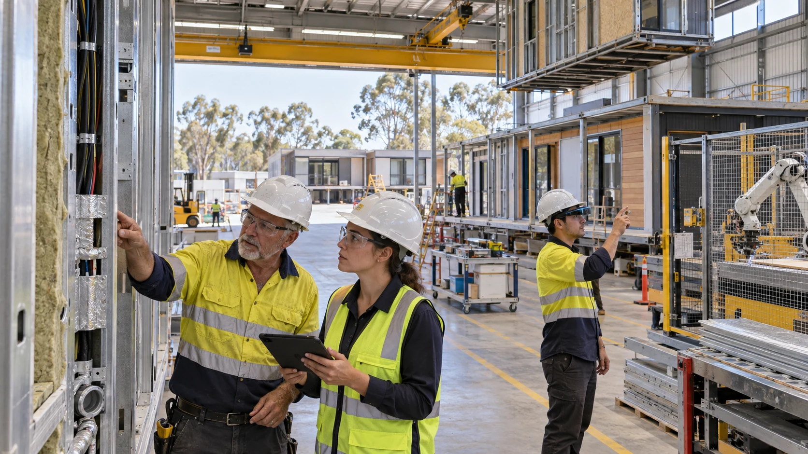

Connect the proposals and invite practical work
Explain the global purpose, make the source plans accessible and develop specific starting briefs with interested people.
Current website; proposed operating workA community activity, a leadership opportunity, a useful technology trial or a business handover can each be a starting point. Connect the results to the wider transition in ownership, income, learning and public decisions.

Agree the change sought, who decides, the resources available and how people can challenge or revise the work. Record a starting situation so an improvement can be compared with what came before.
Keep a viable business serving customers while passing on knowledge and changing ownership.
Give a prospective leader a defined responsibility, authority, pay and mentoring.
Test whether recognising voluntary help makes participation easier.
Test a defined task and record performance, costs and effects on people.
Report what was attempted, what it cost, who benefited, who was missed and what failed. Other groups can adapt useful lessons to their own circumstances. GAJRA’s questions help connect those results with the purpose of the transition.
Explain the global purpose, make the source plans accessible and develop specific starting briefs with interested people.
Current website; proposed operating workA negotiated acquisition or partnership, with funding, management, employee arrangements, permitted data and a measurable transition plan. No transaction is announced here.
Proposed; no fixed dateTest paid learning, supervised rotations, management continuity, shared services and funded time away. Record outcomes before generalising.
Proposed; evidence-dependentLuke proposes comprehensive reflection on Australian law and international obligations before a cyber-republic referendum by 2031. It is not an announced referendum, an entitlement to one or a forecast of an outcome.
Author's proposed horizonExplore links with Brisbane's wider learning, events and volunteer context. This workbench claims no official Olympic or Paralympic partnership.
Project horizon; no partnership claimedThe proposed global art, music and reflection convergence around the 50th anniversary of Live Aid, with communities choosing their own participation.
Proposed gatheringLong-lived infrastructure, habitats, knowledge, culture and Kardashev galactic games remain a horizon for research, imagination and progressively demonstrated capability.
Long-horizon exploration